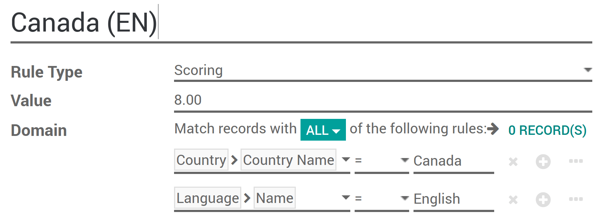
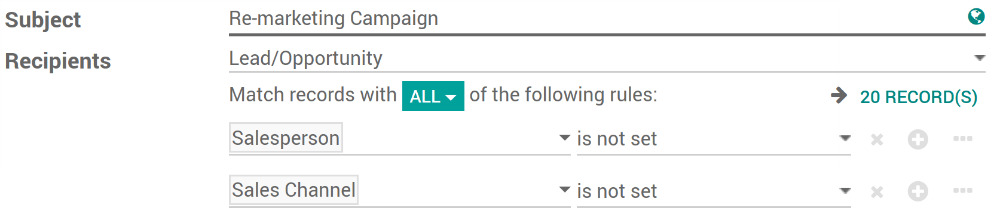

With Leads Scoring you can automatically rank your leads based on selected criterias.
For example you could score customers from your country higher or the ones that visited specific pages on your website.
Настройка
To use scoring, install the free module Lead Scoring under your Apps page (only available in Odoo Enterprise).
Создание правил квалификации лидов
You now have a new tab in your CRM app called Leads Management where you can manage your scoring rules.
Here's an example for a Canadian lead, you can modify for whatever criteria you wish to score your leads on. You can add as many criterias as you wish.
Every hour every lead without a score will be automatically scanned and assigned their right score according to your scoring rules.
Assign leads
Once the scores computed, leads can be assigned to specific teams using the same domain mechanism. To do so go to and apply a specific domain on each team. This domain can include scores.
Further on, you can assign to a specific vendor in the team with an even more refined domain.
To do so go to .
Примечание
The team & leads assignation will assign the unassigned leads once a day.
Evaluate & use the unassigned leads
Once your scoring rules are in place you will most likely still have some unassigned leads. Some of them could still lead to an opportunity so it is useful to do something with them.
In your leads page you can place a filter to find your unassigned leads.
Why not using or apps to send a mass email to them? You can also easily find such unassigned leads from there.
